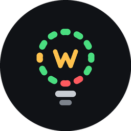

Wattlo
Політика конфіденційності
Остання зміна: 20 листопада 2026 року
Wattlo — неофіційний застосунок. Він не пов'язаний із НЕК «Укренерго», Міністерством енергетики, обленерго, ДТЕК, YASNO чи будь-яким іншим оператором мереж і не представляє їх. Графіки беруться з публічних джерел і можуть відрізнятися від фактичних відключень: слідкуйте також за офіційними оголошеннями. Аварійні й екстрені відключення в графіках зазвичай не відображаються, тож застосунок про них не знає.
Коротко
Wattlo не збирає, не зберігає на серверах і не передає розробнику жодних персональних даних. У застосунку немає облікових записів, реклами, аналітики й звітів про збої. Усі налаштування й кеш графіка лежать лише на вашому телефоні та годиннику.
Що застосунок робить із мережею
Щоб показати графік, застосунок сам завантажує публічні сторінки:
- poe.pl.ua — офіційний графік Полтаваобленерго (лише для Полтавської області);
- yasno.ua (адреса
app.yasno.ua) — графіки Києва й Дніпра; - GitHub (
raw.githubusercontent.com): відкриті JSON-файли outage-data-ua, OE_OUTAGE_DATA і gpv-voe-vinnytsia, які волонтери збирають із сайтів обленерго; - bezsvitla.com.ua — графіки всіх регіонів.
Як і будь-який запит до сайту, він містить вашу IP-адресу та рядок User-Agent «Wattlo/1.0». У запиті є лише адреса сторінки чи файлу регіону (для poe.pl.ua — дата, для YASNO — номер міста й оператора); ваша черга, імена черг і налаштування на ці сайти не передаються: чергу застосунок вибирає з отриманої таблиці на вашому пристрої. Ці сайти й GitHub — окремі сервіси зі своїми політиками конфіденційності, розробник Wattlo ними не керує.
Що зберігається на пристрої
- регіон, джерело, черга, додаткові черги та їхні назви, вигляд кілець, налаштування нагадувань і тихих годин;
- останній отриманий графік (кеш) та час його оновлення.
Ці дані залишаються на пристрої й видаляються разом із застосунком (або через «Налаштування → Програми → Wattlo → Пам'ять → Очистити дані»).
Синхронізація телефона й годинника
Спільні налаштування (регіон, черга, нагадування, вигляд на годиннику) передаються між вашим телефоном і вашим годинником Wear OS сервісом Google Play Services (Wear OS Data Layer), безпосередньо між вашими пристроями. Розробник цих даних не отримує. Графік кожен пристрій завантажує сам.
Дозволи
| Дозвіл | Навіщо |
|---|---|
| Інтернет, стан мережі | завантажити графік із сайтів вище |
| Сповіщення | нагадування перед відключенням і включенням, сповіщення про зміну графіка (лише якщо ви їх увімкнули) |
| Точні будильники | нагадування в задану хвилину, оновлення відліку у віджетах |
| Запуск після перезавантаження | поновити заплановані нагадування й оновлення |
| Вібрація, запобігання засинанню | вібрація нагадування, коротке фонове оновлення |
Діти
Застосунок не призначений для дітей і не збирає даних про них — як і про будь-кого іншого.
Зміни політики
Якщо політика зміниться, нова версія з'явиться на цій сторінці з новою датою.
Зв'язок
Питання й повідомлення про помилки: github.com/termit-uanic/wattlo/issues. Вихідний код відкритий: github.com/termit-uanic/wattlo.
Политика конфиденциальности
Последнее изменение: 20 ноября 2026 года
Wattlo — неофициальное приложение. Оно не связано с НЭК «Укрэнерго», Министерством энергетики, облэнерго, ДТЭК, YASNO или любым другим оператором сетей и не представляет их. Графики берутся из публичных источников и могут отличаться от фактических отключений: следите также за официальными объявлениями. Аварийные и экстренные отключения в графиках обычно не отражаются, поэтому приложение о них не знает.
Коротко
Wattlo не собирает, не хранит на серверах и не передаёт разработчику никаких персональных данных. В приложении нет учётных записей, рекламы, аналитики и отчётов о сбоях. Все настройки и кеш графика лежат только на вашем телефоне и часах.
Что приложение делает с сетью
Чтобы показать график, приложение само загружает публичные страницы:
- poe.pl.ua — официальный график Полтаваоблэнерго (только для Полтавской области);
- yasno.ua (адрес
app.yasno.ua) — графики Киева и Днепра; - GitHub (
raw.githubusercontent.com): открытые JSON-файлы outage-data-ua, OE_OUTAGE_DATA и gpv-voe-vinnytsia, которые волонтёры собирают с сайтов облэнерго; - bezsvitla.com.ua — графики всех регионов.
Как и любой запрос к сайту, он содержит ваш IP-адрес и строку User-Agent «Wattlo/1.0». В запросе только адрес страницы или файла региона (для poe.pl.ua — дата, для YASNO — номер города и оператора); ваша очередь, названия очередей и настройки на эти сайты не передаются: очередь приложение выбирает из полученной таблицы на вашем устройстве. Эти сайты и GitHub — отдельные сервисы со своими политиками конфиденциальности, разработчик Wattlo ими не управляет.
Что хранится на устройстве
- регион, источник, очередь, дополнительные очереди и их названия, вид колец, настройки напоминаний и тихих часов;
- последний полученный график (кеш) и время его обновления.
Эти данные остаются на устройстве и удаляются вместе с приложением (или через «Настройки → Приложения → Wattlo → Память → Очистить данные»).
Синхронизация телефона и часов
Общие настройки (регион, очередь, напоминания, вид на часах) передаются между вашим телефоном и вашими часами Wear OS сервисом Google Play Services (Wear OS Data Layer), напрямую между вашими устройствами. Разработчик этих данных не получает. График каждое устройство загружает само.
Разрешения
| Разрешение | Зачем |
|---|---|
| Интернет, состояние сети | загрузить график с сайтов выше |
| Уведомления | напоминания перед отключением и включением, уведомления об изменении графика (только если вы их включили) |
| Точные будильники | напоминание в заданную минуту, обновление отсчёта в виджетах |
| Запуск после перезагрузки | восстановить запланированные напоминания и обновления |
| Вибрация, предотвращение засыпания | вибрация напоминания, короткое фоновое обновление |
Дети
Приложение не предназначено для детей и не собирает данных о них — как и о ком-либо другом.
Изменения политики
Если политика изменится, новая версия появится на этой странице с новой датой.
Связь
Вопросы и сообщения об ошибках: github.com/termit-uanic/wattlo/issues. Исходный код открыт: github.com/termit-uanic/wattlo.
Privacy policy
Last changed: 20 November 2026
Wattlo is an unofficial app. It is not affiliated with, endorsed by or representing Ukrenergo, the Ministry of Energy, any regional power company, DTEK, YASNO or any other grid operator. The schedules come from public sources and may differ from the actual outages: please follow the official announcements as well. Emergency outages are usually not part of the published schedules, so the app does not know about them.
In short
Wattlo does not collect, store on servers or send to the developer any personal data. The app has no accounts, no ads, no analytics and no crash reporting. All settings and the cached schedule stay on your phone and your watch.
What the app does with the network
To show a schedule, the app itself downloads public pages:
- poe.pl.ua: the official schedule of the Poltava power company (the Poltava region only);
- yasno.ua (the address is
app.yasno.ua): the schedules of Kyiv and Dnipro; - GitHub (
raw.githubusercontent.com): the open JSON files outage-data-ua, OE_OUTAGE_DATA and gpv-voe-vinnytsia that volunteers collect from the sites of the regional power companies; - bezsvitla.com.ua: the schedules of all the regions.
Like any request to a website, it carries your IP address and a User-Agent of "Wattlo/1.0". The request names only the address of the page or file of the region (for poe.pl.ua, a date; for YASNO, the number of the city and of the operator); your queue, the names of your queues and your settings are not sent to these sites: the app picks the queue out of the downloaded table on your device. These sites and GitHub are separate services with their own privacy policies; the developer of Wattlo does not run them.
What is stored on the device
- the region, the source, the queue, the extra queues and their names, the look of the rings, the reminder and quiet-hours settings;
- the last schedule received (a cache) and when it was updated.
This data stays on the device and is removed with the app (or with Settings → Apps → Wattlo → Storage → Clear data).
Syncing the phone and the watch
The shared settings (region, queue, reminders, how the watch looks) travel between your phone and your Wear OS watch through Google Play Services (the Wear OS Data Layer), directly between your own devices. The developer does not receive them. Each device downloads the schedule itself.
Permissions
| Permission | Why |
|---|---|
| Internet, network state | to download the schedule from the sites above |
| Notifications | reminders before the power goes off and comes back, notifications about schedule changes (only if you turn them on) |
| Exact alarms | a reminder at the minute you set, the countdown in the widgets |
| Start after reboot | to restore the planned reminders and updates |
| Vibration, keep awake | the vibration of a reminder, a short background update |
Children
The app is not directed at children and collects no data about them, or about anybody else.
Changes to this policy
If the policy changes, the new version will appear on this page with a new date.
Contact
Questions and bug reports: github.com/termit-uanic/wattlo/issues. The source code is open: github.com/termit-uanic/wattlo.